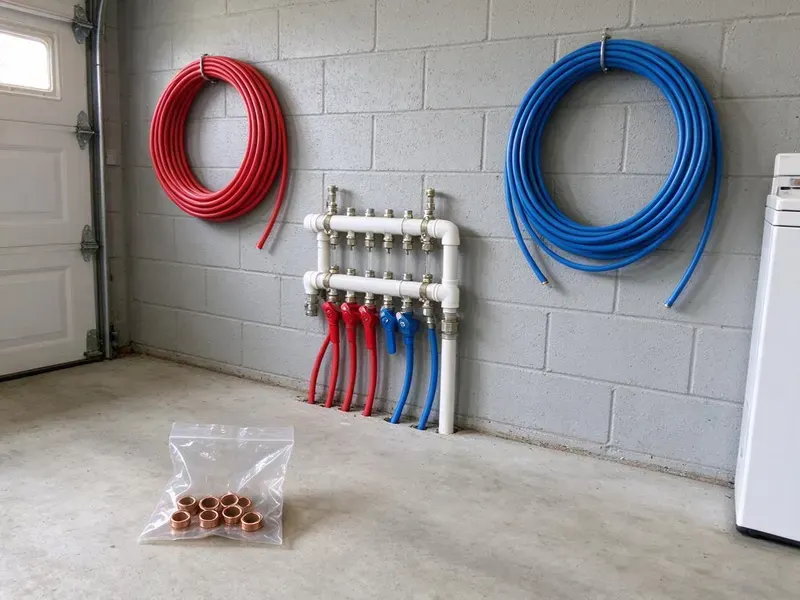

Water Line Installation in Rawlins, WY
We install copper, PEX and HDPE service lines in Rawlins, WY, from the 811 call to the final pressure test.
- Licensed and Insured
- Permits Handled
- Pressure Tested Every Time
- Trenchless Options

Water Line Replacement and New Installs in Rawlins, WY
Call today for an upfront quote on a new main, including trenching and restoration.
Water Line Installation in Rawlins, WY From the Meter to Your Home
A water line works out of sight for forty years, then fails all at once. We put in the kind of line that lasts that long, using PEX, Type K copper or HDPE on sand bedding at the depth your local code requires in Rawlins, WY. The idea is you forget it is there.
Some of what we do:
- Trenching and rock breaking with sand bedding
- Galvanized and polybutylene pipe removal
- HDPE service lines with tracer wire

Additional Plumbing Installation Services in Rawlins, WY
We install water heaters, pumps, lines, and fixtures across Rawlins, WY with careful, permitted work that passes inspection the first time.


Customers
Why Choose JKV Plumbing for Water Line Installation in Rawlins, WY?
Depth, bedding and fittings are where a cheap water line job cuts corners. None of those get skimped on here, because a rock left against the pipe or a fitting not rated for burial can start leaking five years in and run for months before anyone notices the bill. Sand costs very little.
- Clean Restoration, We backfill, compact and regrade so the yard looks like it did before.
- Burial-Rated Pipe, Copper, PEX or HDPE, chosen for your soil and the length of the run.
- Licensed & Insured, Every plumber is licensed and insured, so someone stands behind the work.
Citywide Coverage
From suburban developments to historic districts, the water line problems change. Historic homes tend to have small, corroded lines, and newer homes tend to have pressure problems from long runs and irrigation demand that the original line was never sized to carry in Rawlins. We size for both.
Experienced Team
Hands-on experience matters on a service line. We have trenched through clay and solid rock, and they know how to bed pipe so stones cannot wear through it over the years in Rawlins, WY. Good bedding matters most.
Safety-First Approach
Trenches deeper than five feet need shoring or a trench box by law. The trench box comes along whenever depth requires it, because a collapsing wall of wet soil can bury a worker in seconds, and no water line is worth that risk on any job in Rawlins. Safety rules are not optional.
Trusted Certified Rawlins Plumbing Services Professionals
At JKV Plumbing, we take pride in licensed, certified plumbing services throughout Rawlins, WY. Those papers on the wall mean something. Our plumbers hold recognized industry credentials, and they follow strict safety and quality rules on every repair, installation and maintenance call we run.
Call Us Now PHCC Plumbing Contractor Recognition
PHCC Plumbing Contractor Recognition Better Business Bureau (BBB) Accreditation
Better Business Bureau (BBB) Accreditation Angi Certified Pro
Angi Certified Pro ISO 9001 Quality Management Certification
ISO 9001 Quality Management CertificationWater Line Installation Services in Rawlins, WY
Water Line Upgrades & Relocation in Rawlins, WY
Moving a line is common before an addition, a pool or a new driveway goes in. We reroute the service around the new work, upsize it if the added fixtures call for more flow, and tie it back into your existing shutoff so the rest of the plumbing in Rawlins, WY stays untouched. Plan it early.

Type K Copper Water Line Installation in Rawlins
Type K copper is the thick-walled grade made for burial. It handles high pressure and resists rock punctures, but it costs more than plastic and can corrode in very aggressive soil, so we bed it in clean sand and add protective sleeving anywhere it passes concrete or crosses another utility in Rawlins. Some owners just want metal.
Copper Water Line Installation in Rawlins, WY
Copper service lines last a long time when the soil and water agree with them. We use Type K for buried runs, joined with flare or compression fittings rated for underground use, and we sleeve the pipe where it passes through the foundation wall so it cannot rub against concrete in your Rawlins, WY home. Expect a higher material bill.
Insulating Water Lines for Wyoming Weather in Rawlins, WY
Shutting off and draining outdoor faucets and irrigation lines before the first hard freeze prevents many spring repairs. Exposed pipe is the weak point, not the buried run. Where the line rises into a crawlspace or garage, we insulate it, and in unheated spaces we use closed-cell foam or heat cable rated for water pipe so a cold night does not split the riser at the first fitting in Rawlins, WY. The meter pit gets a look too.
Compliance and Permits for Water Lines in Rawlins
Many Wyoming communities adopt a version of a national plumbing code, and water heater or gas line work frequently requires a permit. Most towns require a permit and an open-trench inspection on a new or replaced service line. The permit gets filed before any digging starts, and we schedule the inspector so the line is checked for depth, bedding and tracer wire while the trench is still open in Rawlins. Backfilling early means digging twice.
Water Line Replacement for Older Homes in Rawlins
Older homes may still have galvanized supply lines that clog with rust and scale, causing low pressure and discolored water. Galvanized steel and early copper in older houses tend to corrode, pit and lose pressure as the scale builds up. A new run of PEX or copper takes its place, and we check the water at the kitchen tap before and after so you can see the difference in flow on the same faucet in your Rawlins home. Brown water at the tap usually goes away.
New Construction Water Line Installation in Rawlins, WY
Plan review comes first on new construction. Our plumber totals the fixture units and the irrigation demand, pick the line size, and work with your builder so the service, the interior distribution lines and the stub-outs all line up with the framing in Rawlins, WY. We time the rough-in to the framing crew.

Commercial Water Line Services in Rawlins, WY
Restaurant and office service lines run bigger, often 1-1/2 to 2 inches, with a backflow assembly at the meter. We coordinate the tap and meter with your water utility, and we schedule the shutoff for a slow morning or a weekend so tenants and customers in Rawlins, WY barely notice the work happened. We file the backflow test report.
Water Line Installation Near Me in Rawlins, WY
Because we work in Rawlins every day, we know which water providers handle meter work and how long inspections take. That lets us quote accurately, without padding the schedule or the price for unknowns that a crew from out of town would have to guess at. We arrive when we say.
Your water bill keeps climbing and the yard has a soft spot? Get in touch with our local crew before the next bill, and we will request utility locates right away and can often start digging within a few days, with emergencies scheduled first. Leaks only get bigger.
JKV Plumbing at a Glance
- Fully licensed plumbing team covering Rawlins, WY
- Same-day appointments and 24/7 emergency response
- Upfront, flat-rate pricing before work begins
- 4.9-star rated by 782+ Wyoming customers
Rawlins Map
Rawlins Information
- Population
- 8,032
- Area codes
- Local
- Service area
- Rawlins and towns within a 40 mile drive
- Nearby
- Casper, Laramie, Rock Springs, Riverton
Rocky fill and shifting clay wear down buried pipe, so a carefully bedded new line keeps pressure steady and the yard dry in Rawlins, WY.
Expert Services
Call JKV Plumbing for honest, reliable plumbing from people who know the trade in Rawlins, WY.
Our Specialized Plumbing Services in Rawlins, WY
At JKV Plumbing, we handle the full list of plumbing services across Rawlins, WY. From leak detection to full system installs, our team works fast and charges fair prices on homes and commercial properties alike. Here are the core services we offer:


What a Water Line Install Looks Like in Rawlins, WY
JKV Plumbing follows a set process on every water line install, from the quote to the restored yard.
Request a Quote
Call (307) 393-4049 or use the online form, and describe the leak or the low pressure. We set up a time to look.
On-Site Assessment
A plumber visits your Rawlins property, picks the route and the pipe, and gives you a clear estimate.
Permit & Preparation
Once you approve, we file the permit and schedule utility marking, then plan the dig.
Frequently Asked Questions About Water Line Installation in Rawlins
Most main service lines in Rawlins run $1,500 to $6,000. The price moves with the length, the pipe and the dig method, along with permits and how much lawn, concrete or planting has to be restored after the trench is closed and compacted. Trenchless costs more per foot.
For PEX we usually install Uponor, Viega or Zurn systems with fittings from the same maker. Copper comes from manufacturers that meet ASTM standards, and we pick the brand and pipe grade based on your run length, your soil and what your local code allows for direct burial in Rawlins. Mixing brands can void warranties.
PEX and copper are the usual picks, with HDPE on long runs. PEX flexes with ground movement and resists corrosion, and copper is rigid, durable and resists bacterial growth, which is why plenty of owners still prefer it for buried service. A water softener or filtration system is a popular upgrade for Wyoming homeowners dealing with scale and staining. Budget and water chemistry usually decide it.
Yes, where the ground allows it. Trenchless replacement pulls a new line through with two small access pits, which spares the lawn and the driveway, though rock and some soil types make it impractical on certain lots in Rawlins. We test the ground first.
This is a job for a licensed plumber. It involves excavation, sizing, connections and code rules, plus coordination with the water utility at the meter, and a poor install can lead to leaks, water damage and contamination of your drinking water. It is not worth the risk.
A typical residential line takes one to two days, plus time for locates and inspection. Rocky ground or a long run can add a day or two.
Installing a main is more than digging a trench. It takes code knowledge, a permit and connections at the meter, and a joint that is not made right can leak underground for months while the water bill climbs and the soil around your foundation soaks. Hire a licensed plumber.
Trenching disturbs a narrow strip, about a shovel width wide. When we finish, the trench gets backfilled, compacted and regraded, and if the route crosses concrete or mature planting we will talk through trenchless options first.
What People Are Saying About Our Plumbing Experts?

Megan L.
Our upstairs tub drained so slowly that every shower turned into a bath. JKV Plumbing pulled a wad of hair out of the stopper and then snaked the line past the trap. Three months later it still drains fast.
Drain Cleaning · Lander, WY
Nathan E.
Our tankless heater kept throwing an error code and shutting off mid shower. The tech flushed the heat exchanger, which was full of scale, and replaced a bad flow sensor. Hot water has been steady for half a year now.
Water Heater Repair · Laramie, WY
Monica A.
Our water bill nearly doubled in one month with no change in how we used water. The tech checked the meter, heard the leak under the hallway with his equipment, and opened a hole about a foot square. Fixed the same day.
Slab Leak Repair · Rock Springs, WY
Patricia H.
We had a slab leak that two other companies could not find. JKV Plumbing located it in under an hour with a listening device. They rerouted the line through the attic instead of breaking up the floor, so we kept our kitchen tile.
Slab Leak Repair · Rock Springs, WYKaren W.
After our third pinhole leak in copper, we stopped patching. JKV Plumbing gave us a written plan room by room and repiped the house in PEX while we stayed in it. The crew covered our floors every morning and cleaned up every night.
Repiping · Riverton, WY
James P.
Our restaurant had a slow leak at the hand sink that was rotting the cabinet base. JKV Plumbing came in at six in the morning before prep, replaced the trap and both supply lines, and was packed up before my first cook clocked in.
Commercial Plumbing · Rawlins, WY